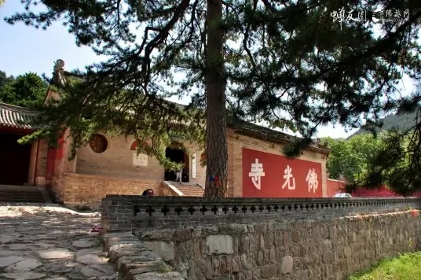

佛光寺 |
返回主页 |  | |
| 佛光寺，位于山西省五台县城东北32千米豆村镇东北的佛光山中（五台山南台西麓）。始建于北魏孝文帝时期（471～499年）。唐大中十一年（857年），重建。 佛光寺位于一处东、南、北三面小山环抱，向西开敞的山坡上。寺内主要轴线为东西方向，依据地形处理成三个平台。 寺内现有殿、堂、楼、阁等一百二十余间。其中东大殿七间，为唐代建筑；文殊殿七间，为金代建筑，其余的均为明、清时期的建筑。 佛光寺的唐代建筑、唐代雕塑、唐代壁画、唐代题记，历史价值和艺术价值较高。 1961年3月4日，佛光寺被中华人民共和国国务院公布为第一批全国重点文物保护单位。 2009年06月26日，包括佛光寺在内的五台山被联合国教科文组织世界遗产委员列入《世界遗产名录》。 | |||